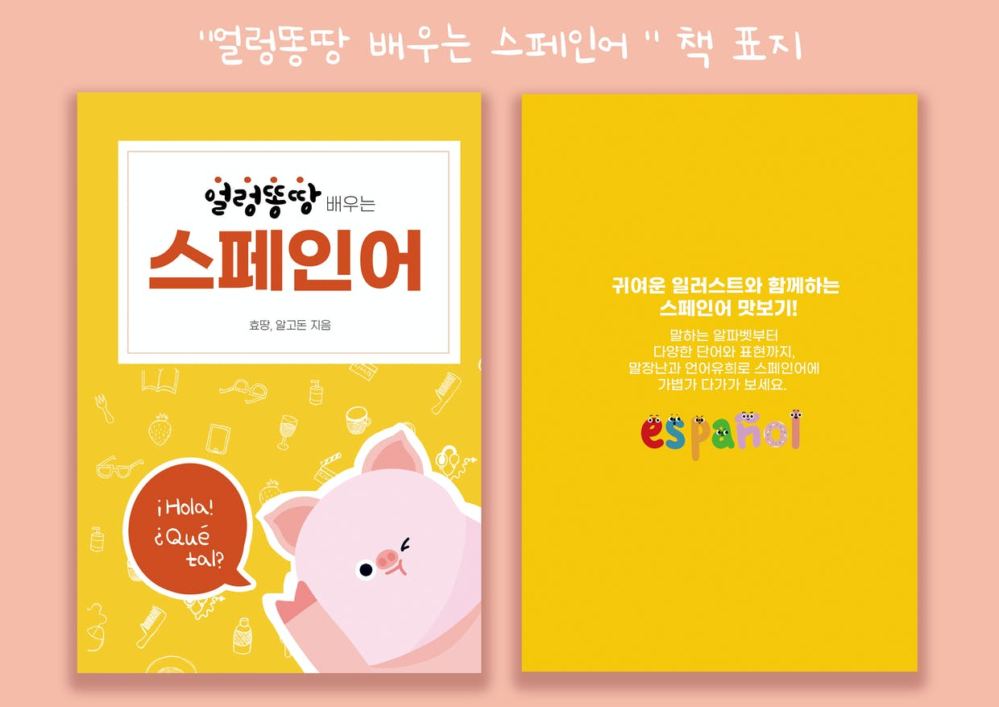
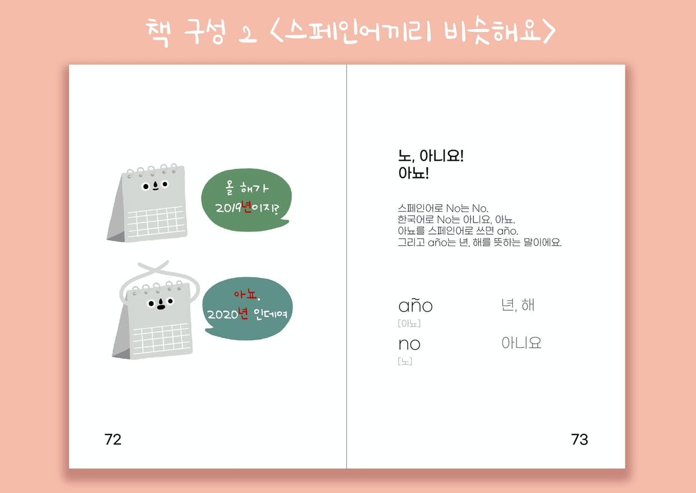
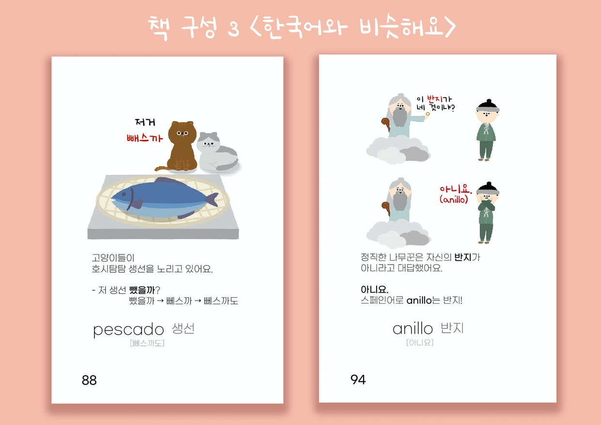
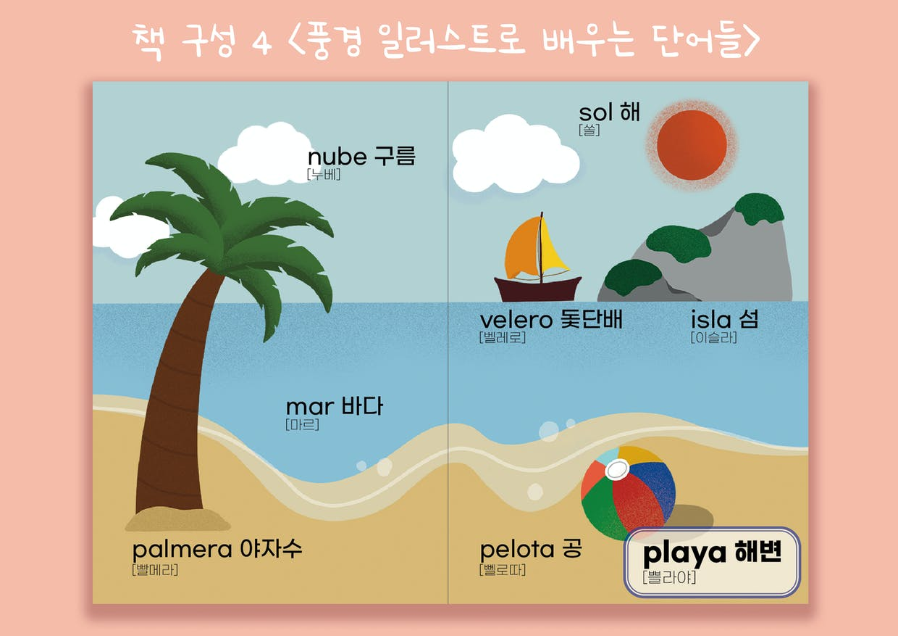
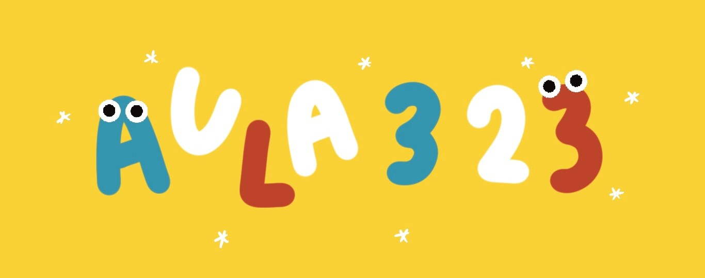

넷플릭스의 인기 스페인 드라마, TV 예능 프로그램의 멋진 스페인 여행지, 넓은 땅덩어리 만큼 볼거리가 넘쳐나는 중남미, 또는 언어에 대한 단순한 호기심 등 스페인어를 배우고 싶어하는 분들도 많이 늘었습니다.
하지만 너무나 낯선 언어이기에 막상 배우려고 하니 막막하기도 하고, 스페인어를 배우고 있다해도 다른 외국어보다 교재 선택의 폭이 다양하지 않아 지루함을 느끼는 분들을 여럿 접하게 되었습니다.
<얼렁똥땅 스페인어>는 스페인어를 전공하고, 스페인어를 몇 년간 사랑해온 (아마도 짝사랑…) 저희가 스페인어를 공부하면서 재미있었던 모먼트들을 이 책에 담아보았습니다.
스페인어는 알파벳 그대로 발음하기 때문에 읽기 쉽고, 발음도 영어나 프랑스어에 비해 훨씬 쉬워요. 스페인어에는 스페인어끼리 발음이 비슷한 단어들도 있고, 한국어 또는 영어와 비슷한 단어들도 많아요. 이런 단어들로 말장난을 하던 것을 모아 많은 사람들에게 알려주고 싶은 마음에 이 책을 제작하게 되었습니다.
그리고 귀여운 것은 언제 봐도 행복하기에 귀여운 그림을 잔뜩 넣고 싶었어요. 효땅이의 피땀 눈물이 담긴 그림 삽화까지 함께 해 국내에서 제일 귀여운 스페인어 책임을 자부할 수 있습니다!
<얼렁똥땅 스페인어>를 통해 스페인어를 정석으로 공부한다기 보다는, “스페인어 알파벳을 어떻게 읽는지 배우고, 스페인어 단어들을 그림과 함께 재미있게 학습한다!”고 생각하시면 좋을 것 같아요. :-)
이런 분들께 추천 드려요


>스페인어끼리 발음이 비슷한 단어들을 모았습니다.
두 단어를 함께 외우면 학습효과 up!

>한국어 발음과 비슷한 스페인어 단어들로 구성했습니다.
일러스트와 함께하는 재치있는 스토리로 스페인어 단어와 발음을 쉽게 익힐 수 있습니다.

>풍경 일러스트로 특정 배경에서 볼 수 있는 사물들의 이름을 학습해요.
*사진의 예시들은 본 도서의 일부분이며, 자세한 구성은 목차에서 확인이 가능합니다.*
안녕하세요, 스페인어에 대한 사랑으로 만난지 어느 덧 5년이 넘어가는 두 amigas(친구)가 함께하는 프로젝트 그룹입니다. 멤버로는 효땅과 알고돈이 함께 하고 있습니다. 효땅과 알고돈은 대학교에서 스페인어를 함께 공부했습니다. Aula 323은 대학생 때 함께 스페인어를 공부했던 동아리 이름으로, 그때의 열정을 기억하며 스페인어 컨텐츠를 만들었습니다. 인스타그램:@aula323_official 트위터: @aula323 + 효땅은 그림에 대한 애정으로 조금씩 그림을 그리고 있습니다. @ddongddangdraw
